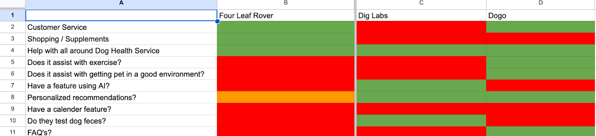
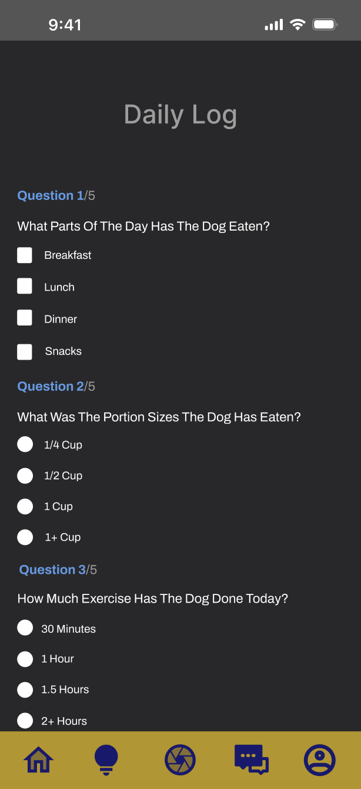

Pet Wellness Companion — Helping Owners Stay Ahead of a Dog’s Health
I designed 3DogE so dog owners could log Eat, Exercise, and Environment and get a read on their dog’s health without drowning in information.
Quick glance is unavailable at this time.
01 - Assignment
3DogE is a startup building a holistic dog app. The client’s vision was an owner who could stay ahead of their dog’s health — not wait until something was already wrong.
The name is the brief. Every flow I designed had to make Eat, Exercise, and Environment usable, not just present as a slogan next to a scanner.
Eat
Help owners understand what their dog is eating and whether that diet supports health.
Exercise
Give owners a way to log movement and see whether their dog is exercising enough.
Environment
Capture what the dog’s environment is like so the app can support a balanced life.
02 - Uncovering the Problem
I am Muslim, and in my faith we are not allowed to keep dogs in the home. I did not have a lived model of pet parenting to design from. Before a competitive audit or an interview, I had to learn the domain — YouTube days-in-the-life, owner forums, basic care — until I could hear a story without guessing.
Then I looked at where pet parents already looked for help and which features were missing from apps like 3DogE.
There were almost no apps built around an AI stool scanner. I audited adjacent wellness and pet products instead — what they shared, what they overbuilt, and what 3DogE should refuse to copy.

03 - Prioritizing Findings
I wrote the interview script to pull first-week confusion, health scares, and the technology owners already trusted. I needed to know how much logging they would actually do — not how much data the app wished it had.
I held affinity and bullseye diagramming until the end so directed storytelling and the client interviews could sit in one model. While I clustered, I kept asking whether each note served Eat, Exercise, or Environment — or whether it was noise.
“Is this just a checklist for what I see in the dog and then like, kind of emphasizing what I want to find?”
Participant
That line changed the product. A scanner that only confirms what the owner already noticed is a checklist. The app had to collect the 3 E’s over time, or it could not tell them anything they did not already know.
How can I keep the 3 E’s visible
without burying owners in information on every screen?
04 - Research to Design
I built an IA key before the map — page, fill-in, checklist, selection — so every flow had a job. Then I walked the owner from login to finish, and I would not keep a path that did not earn one of the 3 E’s.
The scanner gave the app a snapshot. It did not answer how much the dog ate, whether they moved, or what the environment was like. That is why the daily log exists — so the 3 E’s become data the app can work with.

Usability testing walked the scanner, the log, contents, community, and the stool chart. People did not ask for more information. They asked for visibility and a simpler home. I ranked those notes high to low and rebuilt the design system so the colors held together and the home used fewer words.
05 - Learning and Impact
Designing a domain I had to learn from scratch
Without household experience of dogs, the mockup would have been guesswork. The work taught me to build a mental model before I draw, and to treat that research as design — not as a preface.
A scanner is not a wellness product
The AI read was the hook. It was not enough data. The daily log is what let Eat, Exercise, and Environment become something the app could actually use.
Usability pushed me from more information to more restraint
Participants did not complain that pages were thin. They asked for a simpler home and colors they could see. I shifted the last mile from explaining everything to making the three jobs obvious.